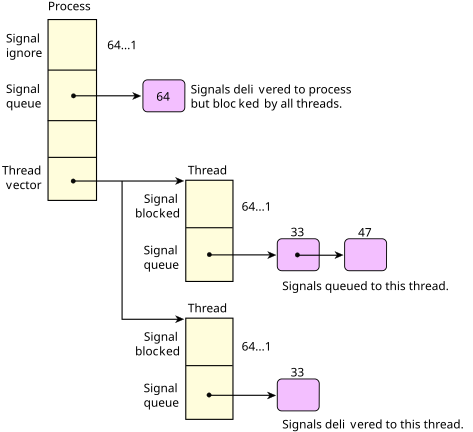

The OS supports the 32 standard POSIX signals (as in UNIX) as well as the POSIX realtime signals, both numbered from a kernel-implemented set of 64 signals with uniform functionality.
While the POSIX standard defines realtime signals as differing from UNIX-style signals (in that they may contain four bytes of data and a byte code and may be queued for delivery), this functionality can be explicitly selected or deselected on a per-signal basis, allowing this converged implementation to still comply with the standard.
Incidentally, the UNIX-style signals can select POSIX realtime signal queuing, if the application wants it. The QNX OS also extends the signal-delivery mechanisms of POSIX by allowing signals to be targeted at specific threads, rather than simply at the process containing the threads. Since signals are an asynchronous event, they're also implemented with the event-delivery mechanisms.
| Microkernel call | POSIX call | Description |
|---|---|---|
| SignalKill() | kill(), pthread_kill(), raise(), sigqueue() | Set a signal on a process group, process, or thread. |
| SignalAction() | sigaction() | Define action to take on receipt of a signal. |
| SignalProcmask() | sigprocmask(), pthread_sigmask() | Change signal blocked mask of a thread. |
| SignalSuspend() | sigsuspend(), pause() | Block until a signal invokes a signal handler. |
| SignalWaitinfo() | sigwaitinfo() | Wait for signal and return info on it. |
When a signal is targeted at a process with a large number of threads, the thread table must be scanned, looking for a thread with the signal unblocked. Standard practice for most multithreaded processes is to mask the signal in all threads but one, which is dedicated to handling them. To increase the efficiency of process-signal delivery, the kernel will cache the last thread that accepted a signal and will always attempt to deliver the signal to it first.

The POSIX standard includes the concept of queued realtime signals. The QNX OS supports optional queuing of any signal, not just realtime signals. The queuing can be specified on a signal-by-signal basis within a process. Each signal can have an associated 8-bit code and a 64-bit value.
This is very similar to message pulses described earlier. The kernel takes advantage of this similarity and uses common code for managing both signals and pulses. The signal number is mapped to a pulse priority using _SIGMAX – signo. As a result, signals are delivered in priority order with lower signal numbers having higher priority. This conforms with the POSIX standard, which states that existing signals have priority over the new realtime signals.